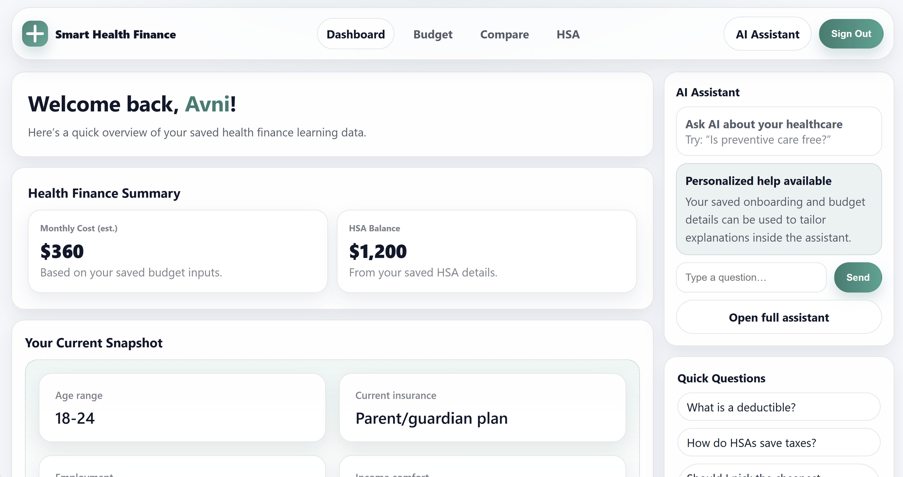
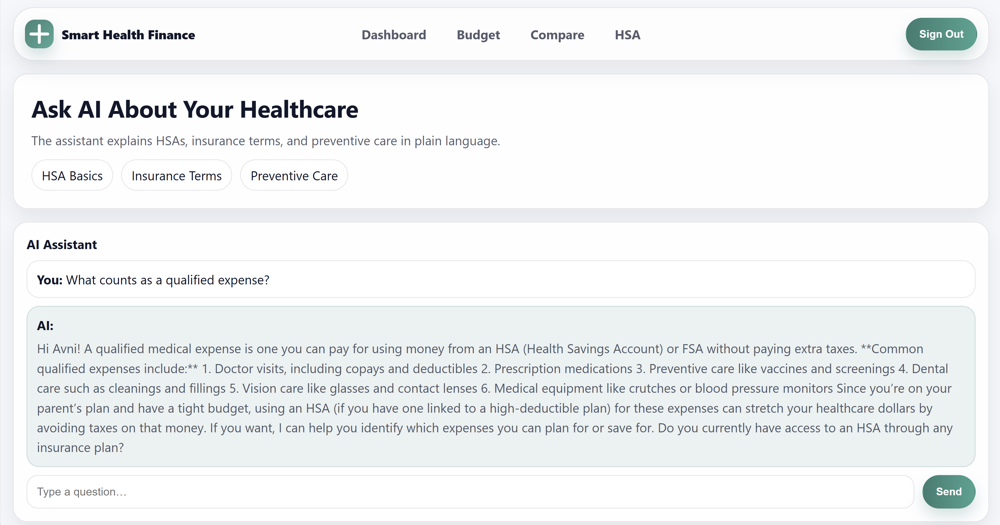

Smart Health Finance
A full-stack healthcare financial literacy platform that helps users understand coverage, plan for medical costs, and make informed decisions with personalized AI guidance.
Overview
Smart Health Finance addresses the gap between having health coverage and understanding how to use it. The platform brings healthcare budgeting, insurance-plan comparison, HSA education, and personalized financial guidance into one approachable experience.
The product is designed for users who may be navigating healthcare finances for the first time. It translates unfamiliar terms into plain language and connects educational content to each user's budget, coverage, and savings information.
What I built
I designed and developed the end-to-end responsive application, including authentication flows, personalized onboarding, healthcare budgeting tools, insurance comparison experiences, HSA learning resources, and a dashboard that organizes saved financial information. The dashboard surfaces estimated monthly costs, HSA savings, current coverage, and relevant educational guidance in a clear hierarchy.
I also integrated a context-aware AI assistant that explains deductibles, qualified expenses, preventive care, insurance terminology, and HSA rules in accessible language. The assistant uses saved onboarding and budget details to make responses more relevant, while quick prompts help users begin common healthcare-finance conversations without needing to know the correct terminology.
Across the product, I created the visual system and interaction patterns, translated complex financial workflows into guided steps, and built reusable interface components to keep the experience consistent across the landing page, dashboard, planning tools, and assistant.
AI integration
I integrated AI throughout the product as a guided support system rather than limiting it to a standalone chat page. Topic shortcuts for HSA basics, insurance terms, and preventive care give users clear starting points, while suggested questions such as "What is a deductible?" and "How do HSAs save taxes?" connect directly to the full assistant and begin the conversation with the selected prompt.
The assistant incorporates saved onboarding, coverage, and budget information to tailor explanations to the user's situation. I designed the prompt-entry flows, contextual handoff between dashboard and chat experiences, conversation interface, and reusable response components so users can move from reviewing their financial snapshot to asking a relevant follow-up question without losing context.
This approach demonstrates how AI can be embedded into a larger application architecture to reduce friction, support decision-making, and make specialized information more accessible while keeping the user in control of the interaction.


